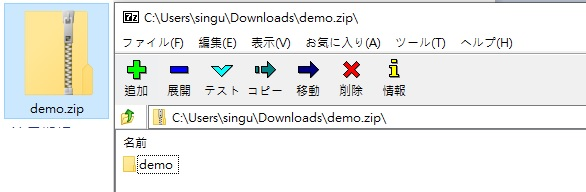
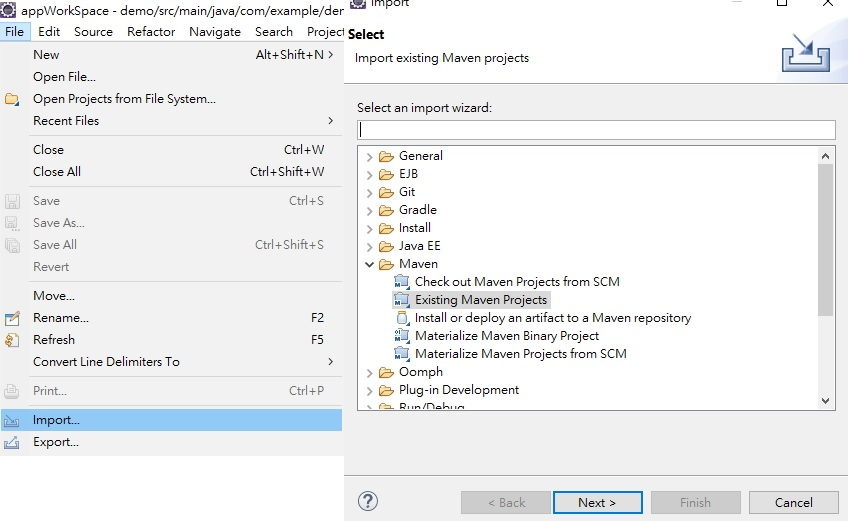
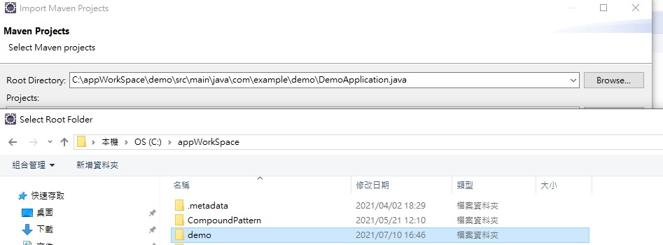
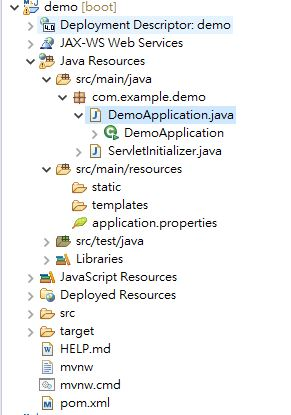
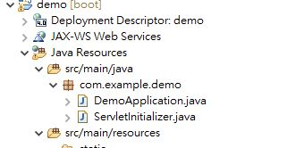
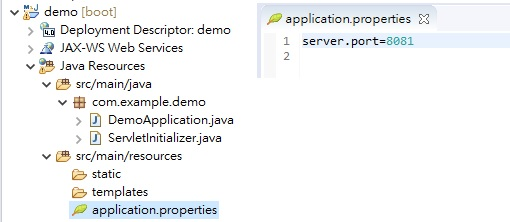
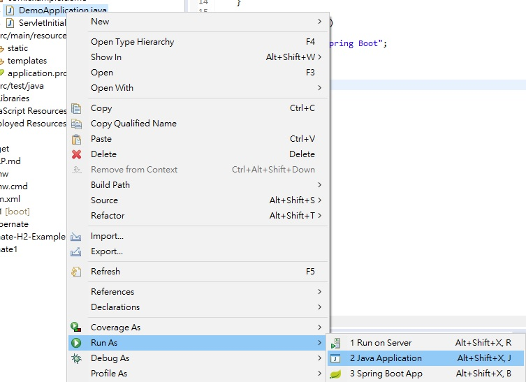
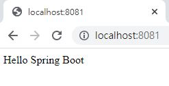

Spring Boot 核心

基本配置
@SpringBootApplication

Spring Boot 快速搭建
(1) http://start.spring.io
Project 可以選擇適用Maven 或Gradle 建置
Spring Boot 的版本
Packaging 種類
java 的版本 Spring Boot 最低要求為1.6 和Spring 框架4.x 最低要求一樣
ADD DEPENDENCIES... 可以輸入關鍵字來加入需要的元件
IDE 開啟
1

下載後會是壓縮檔，打開後可以放入IDE的工作資料夾內待引用
2

打開IDE(eclipse) Import
3

選擇檔案位置
4

專案結構
Spring Boot Hello World
1
在DemoApplication.class 中編寫代碼

package com.example.demo; import org.springframework.boot.SpringApplication; import org.springframework.boot.autoconfigure.SpringBootApplication; import org.springframework.web.bind.annotation.RequestMapping; import org.springframework.web.bind.annotation.RestController; @RestController @SpringBootApplication public class DemoApplication { public static void main(String[] args) { SpringApplication.run(DemoApplication.class, args); } @RequestMapping("/") String index() { return "Hello Spring Boot"; } }
2
如果需要改port 可以在application.properties 設定

3
點選 Java Application 或 Spring Boot App 運行項目

4
開啟網頁前往http://localhost:8081/
